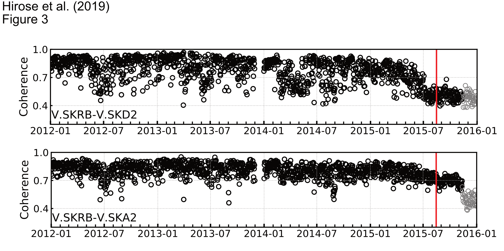

Works
論文・学会発表の一覧と研究紹介のページです．
Papers
- Hirose, T., H. Nakahra, and T. Nishimura (2019b), Time lapse imaging of seismic scattering properties in a multiple scattering regime: Application to the 2015 dike intrusion event at Sakurajima volcano, Japan (in preparation)
- Hirose, T., H. Nakahra, and T. Nishimura (2019a), A passive estimation method of scattering and intrinsic absorption parameters from envelopes of seismic ambient noise cross-corrletion functions, Geophysical Research Letters, doi:10.1029/2018GL080553
- Hirose, T., H. Nakahra, and T. Nishimura (2017), Combined use of repeated active shots and ambient noise to detect temporal changes in seismic velocity: Application to Sakurajima volcano, Japan, Earth Planets Space, 69, 42, doi:10.1186/s40623‐017‐0613‐7, Link
.
（コーダ波干渉法と地震波干渉法を同時期のデータに適用し，得られた速度変化の値を直接比較検証．）
Presentations
- Takashi Hirose, Hisashi Nakahra, Takeshi Nishimura, A passive method to estimate scattering and intrinsic absorption parameters using envelopes of ambient seismic noise cross-correlation functions, AGU Fall Meeting, Washington D.C., December 2018. (Poster)
- Takashi Hirose, Hisashi Nakahra, Takeshi Nishimura, A passive method for the estimation of scattering and intrinsic absorption parameters using envelopes of ambient seismic noise cross-correlation functions, Earth, Sea and Sky III: International Joint Graduate Program Workshop in Earth and Environmental Sciences, Sendai, May 2018. (Poster)
- Takashi Hirose, Hisashi Nakahra, Takeshi Nishimura, Estimation of scattering and intrinsic absorption parameters using envelopes of ambient seismic noise cross-correlation functions, 地球惑星科学連合大会, 幕張, 2018年5月．（口頭発表）
- 廣瀬郁・中原恒・西村太志，雑微動の相互相関関数を用いた2015年8月15日桜島のダイク貫入に伴う地震波散乱特性の時空間変化イメージング，日本地震学会秋季大会，鹿児島，2017年10月．（口頭発表）学生優秀発表賞受賞
- 廣瀬郁・中原恒・西村太志，地震波干渉法による2015年8月15日桜島のダイク貫入に伴う地震波散乱特性の時空間変化イメージング，研究集会「海洋−固体地球システムにおける波動現象と構造不均質性」，東京大学地震研究所，2017年9月．（口頭発表）
- 廣瀬郁・中原恒・西村太志，地震波干渉法を用いた2015年8月15日桜島のダイク貫入に伴う地震波散乱特性の時空間変化イメージング，日本火山学会秋季大会，熊本，2017年9月．（口頭発表）
- Takashi Hirose, Hisashi Nakahra, Takeshi Nishimura, Spatio-temporal changes of seismic scattering properties associated with the dike intrusion on 15 August 2015 at Sakurajima volcano, Japan, detected by seismic interferometry, IUGG-IASPEI Symposium, Kobe, Jul. 2017. (Oral)
- Takashi Hirose, Hisashi Nakahra, Takeshi Nishimura, Spatio-temporal changes of seismic scattering properties associated with the dike intrusion event on 15 August 2015 at Sakurajima volcano, Japan, detected by using seismic interferometry, Earth, Sea and Sky II: International Joint Graduate Program Workshop in Earth and Environmental Sciences, Sendai, May 2017. (Oral)
- Takashi Hirose, Hisashi Nakahra, Takeshi Nishimura, Detection of spatio-temporal changes of seismic scattering properties with seismic interferometry: Dike intrusion event on 15 August 2015 at Sakurajima volcano, 地球惑星科学連合大会, 幕張, 2017年5月．（口頭発表）
- 廣瀬郁・中原恒・西村太志，地震波干渉法に基づく2015年8月15日桜島のダイク貫入に伴う地震波散乱特性の時空間変化の検出，日本火山学会秋季大会，富士吉田，2016年10月．（口頭発表）
- 廣瀬郁・中原恒・西村太志，地震波干渉法により検出した2015年8月15日桜島のダイク貫入に伴う地震波散乱特性の時空間変化，日本地震学会秋季大会，名古屋，2016年10月．（口頭発表）
- 廣瀬郁・中原恒・西村太志，繰り返し発破と雑微動の併用による地震波速度の時間変化の検出-桜島への適用-，研究集会「海洋−固体地球システムにおける波動現象と構造不均質性」，東京大学地震研究所，2016年8月．（口頭発表）
- Takashi Hirose, Hisashi Nakahra, Takeshi Nishimura, Detecting seismic velocity changes at Sakurajima volcano, Japan by seismic interferometry and coda wave interferometry, IUGG Symposium, Praha, Jun. 2015. (Oral)
- 廣瀬郁・中原恒・西村太志，コーダ波干渉法と地震波干渉法の併用により検出した桜島の地震波速度構造の時間変化，地球惑星科学連合大会, 幕張, 2015年5月．（ポスター発表）
Research Topics
以下で紹介しているトピックに加え，現在フランス・グルノーブル地球科学研究所の研究者と共同で2011年東北地方太平洋沖地震に伴う地震波散乱特性変化の空間分布推定に取り組んでおり，興味深い結果が得られています．2008年岩手・宮城内陸地震に伴う地震波散乱特性変化の空間分布の推定
2008年に発生し大きな被害をもたらした岩手・宮城内陸地震の直前・直後の雑微動記録に地震波干渉法を適用し，地震発生に伴って震源の南側で地震波散乱特性が特に大きく変化していたことを発見しました．さらに我々は，医療分野などで既に応用が進んでいる「スパースモデリング」を地震波散乱特性変化の空間分布推定に応用し，観測点数を17点から7点にまで減らした状態でも，ほぼ同じ推定結果を得ることに成功しました（図1）．「スパースモデリング」を積極的に活用することで，例えば中南米などの地震観測網が疎らな地域でも地下構造が大きく変化した場所の特定が可能となることが期待されます．図1. 推定に用いる観測点数を変化させたときの推定結果の比較．オレンジの領域が，地震波散乱特性が特に大きく変化した領域．赤星は本震の震央．
2015年桜島ダイク貫入イベントに伴う地震波散乱特性変化の検出
2015年8月15日に発生した，桜島ダイク（マグマ）貫入イベント（いわゆる桜島クライシス）に伴う地下構造変化の検出に成功しました．桜島ダイク貫入イベントに伴う顕著な地殻変動や地震活動の活発化は，ダイク貫入当日・直前にのみ検出されていました．我々は，雑微動の相互相関関数の波形変化を連続的に測定することで，2015年7月の時点で地下構造が既に大きく変化していたことを発見しました（図1）．さらに我々は，従来のイメージング手法が火山のような不均質が強い領域では適用困難である点に着目し，火山でも適用可能な手法を提案するとともにダイク貫入イベントに伴い地下構造が特に大きく変化した場所の推定も行いました．

図1. ダイクを横切る観測点ペアとそうでない観測点ペアでの波形相関の時間変化．波形相関が低下している期間は，地下構造が大きく変化していることを示す．赤線はダイク貫入イベント．
雑微動の相互相関関数を用いた汎用性の高い地下の不均質強度推定手法の開発
地下の不均質の強さを表すパラメータの値を，雑微動の相互相関関数を用いて推定する手法の開発に成功しました．雑微動とは，地震が起きていないときにも常に地震計に記録されている微弱な震動のことです．これまで，地下の不均質の強さを表すパラメータは，自然地震や人工地震探査のデータを用いて推定されてきました．しかし，この方法は地震活動が活発でない地域や人工地震探査が行われていない地域では適用が困難でした．また，雑微動の相互相関関数を用いて地下の不均質の強さを推定する試み自体はこれまでも行われてきましたが，地下の不均質の強さを特徴づける2つのパラメータを分離して推定することに成功した例はありませんでした．本研究では，適切なデータ処理を行うことでこれら2つのパラメータを安定して推定することができることを示しました．また，人工地震探査のデータから推定した値と雑微動の相互相関関数を用いて推定した値を直接比較し，結果の信頼性を確認しました（図1）．
我々が開発した手法を用いることにより，これまで測定自体が困難だった地域でも地下の不均質の強さを測定することが可能となります．また，データとして雑微動を用いているので，地下の不均質の強さの時間変化の推定も可能となります．
図1. 3ヶ月ごとのパラメータの推定結果．青の実線は，適切なデータ処理を行なった結果．オレンジの点線は，これまで広く用いられてきたデータ処理方法を用いた結果．赤線は人工地震探査のデータから推定した結果．
地震波干渉法とコーダ波干渉法の併用による地震波速度構造モニタリング
地下構造の変化を反映する地震波速度の時間変化を，地震波干渉法とコーダ波干渉法という2つの手法を用いてそれぞれ推定し，両者の結果が良く一致することを示しました．桜島において地震波干渉法およびコーダ波干渉法を適用したのは本研究が初めてであり，さらに，2つの手法の結果を直接比較検証したのも本研究が世界で初めてです．コーダ波干渉法は，繰り返し発破(人工地震)記録のような相似性の良い2つの地震記録のコーダ波(媒質中を長時間伝播した散乱波で構造変化に敏感)を用いて地震波速度の変化量を測定する手法です．この手法は，雑微動を用いる地震波干渉法よりも精度は安定しますが，連続的なモニタリングは難しいのが難点でした．我々は，鹿児島県の桜島において毎年繰り返し発破が行われている点に注目し，2つの手法を同時期のデータに適用することで結果を比較検証しました（図1）．また，地震波干渉法によって推定された2012年ー2014年の地震波速度変化が，桜島の中期的な（数ヶ月周期）地殻変動と対応していることを発見しました（図2）．本研究の成果が国際学術誌に発表された後にも，他の火山においてもこの様な地震波速度変化と火山性地殻変動の対応を検出した研究がいくつか報告されています [例えば，Takano et al., 2017; Donaldson et al., 2017]．
図1. 桜島での地震波速度変化（灰色：地震波干渉法，赤・青・緑：コーダ波干渉法）
図2. 桜島での地震波速度変化（青丸）と面積歪（赤十字）